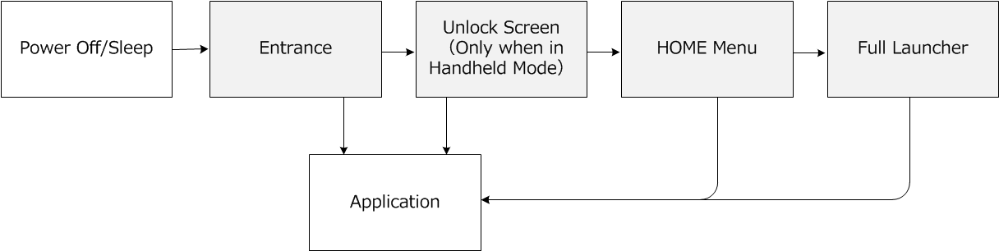

The menus that are called by the HOME and POWER Buttons are collectively referred to as system menus. You can call a library applet while playing an NX application, and then return to the application when the applet closes.
The following list shows the types of system menus that are available.
They are used to start, restart, and perform simple configurations from the system menu for both applications and system applications.
After the device is turned on, the following screen transitions are likely to occur until the application starts.

Quick Settings and POWER Menu can be called from the Entrance, including the Unlock Screen, the HOME Menu, the launcher, and from applications. For more information about Quick Settings and POWER Menu, see the System Features Guide.
CONFIDENTIAL